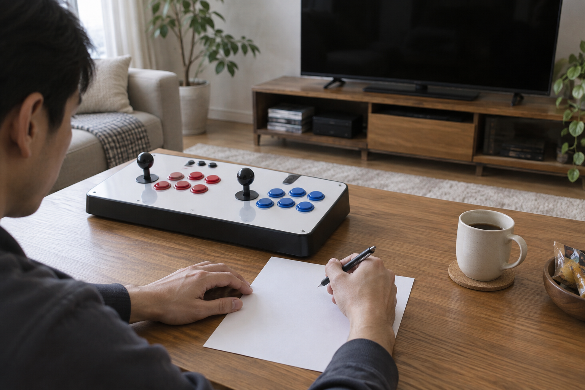

원하는 게임이 들어 있는지 구매 전에 확인하려면 구매할 제품명과 게임팩 이름, 원하는 게임의 정확한 제목을 한 번에 맞춰 봐야 합니다. 최신 판매 페이지에서 목록을 찾고, 표기가 모호하면 세 가지 이름을 함께 적어 판매자에게 확인한 뒤 답변 날짜까지 남겨 두세요.

확인할 이름 세 가지를 먼저 적으세요
먼저 구매하려는 제품명과 선택할 게임팩 이름을 그대로 적고, 원하는 게임은 시리즈와 작품명까지 구분하세요. 같은 시리즈라도 작품이 여러 개일 수 있고, 비슷한 상품명이라도 게임 구성이 같다고 단정할 수 없습니다. 원하는 게임의 이름을 아직 정하지 못했다면 가정용 오락기의 게임 구성 기준을 먼저 확인해 보세요.
제품명·게임팩·게임 제목을 함께 적어야 서로 다른 구성을 혼동하지 않습니다.
- 판매 페이지에 표시된 제품명 그대로 적기
- 선택 옵션이나 게임팩 이름 따로 적기
- 게임의 시리즈명과 작품명 구분하기
- 한글명과 영문명이 다르면 두 이름 함께 적기
최신 판매 안내와 같은 상품인지 맞춰 보세요
노리박스 제품 목록에는 ‘레볼루션 RV팩 128G 7078게임 TV연결형’과 ‘신형HX 8K 2027 한글게임팩’처럼 제품명에 서로 다른 팩과 게임 수 안내가 붙은 상품이 함께 있습니다. 이 숫자는 각 상품의 현재 표기를 가리키며, 다른 모델의 수록 내용을 보장하지 않습니다. 검색 결과의 짧은 문구만 보지 말고 실제 판매 페이지에서 상품명과 선택 옵션, 수록 목록의 기준을 맞춰 보세요.
검색 결과보다 구매하려는 상품의 최신 상세 안내를 기준으로 판단해야 합니다.
판매자에게 한 문장으로 확인하세요
목록에서 게임을 찾기 어렵다면 “이 제품의 이 게임팩에 정확한 게임 제목이 들어 있나요?”처럼 제품과 팩, 게임을 한 문장에 넣어 문의하세요. 철권이나 스트리트 파이터처럼 작품이 여러 개인 게임을 찾는다면 대전 게임용 제품 확인 기준처럼 어느 작품을 원하는지도 적는 편이 좋습니다. 노리박스는 제품을 소개하기 전에 게임을 직접 실행하고 조이스틱과 버튼을 만져보며 사용 과정의 불편을 확인한다고 밝히고 있습니다.
판매자 문의에는 제품명과 게임팩, 정확한 게임 제목이 모두 들어가야 합니다.
답변과 확인 날짜를 함께 남기세요
판매 구성은 바뀔 수 있으므로 답변을 받았다면 해당 상품 주소와 확인 날짜를 함께 기록하세요. 가족과 상의할 때도 ‘게임이 있다’는 말만 전달하기보다 어느 제품과 팩에 관한 답변인지 보여 주면 혼동을 줄일 수 있습니다. 구매 직전에는 같은 판매 페이지의 안내가 그대로인지 한 번 더 확인하세요.
수록 여부 기록에는 상품 주소와 확인 날짜를 함께 남겨야 다시 확인하기 쉽습니다.
현재 노리박스 오락실게임기와 관련 제품은 제품자세히보기에서 확인하세요.